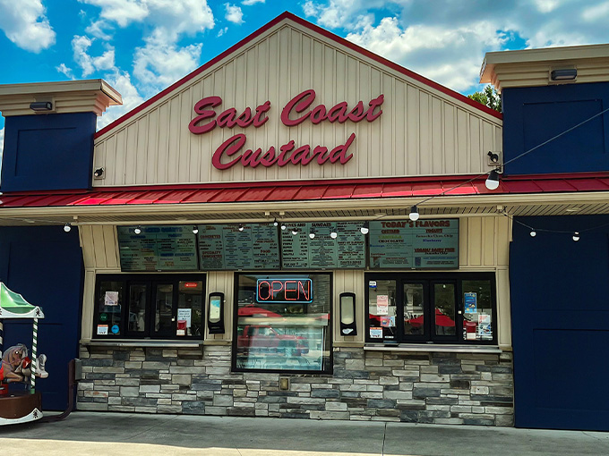
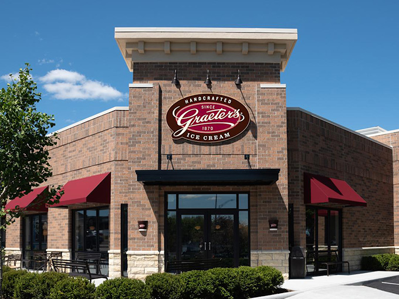
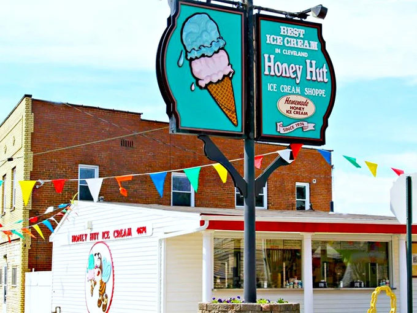
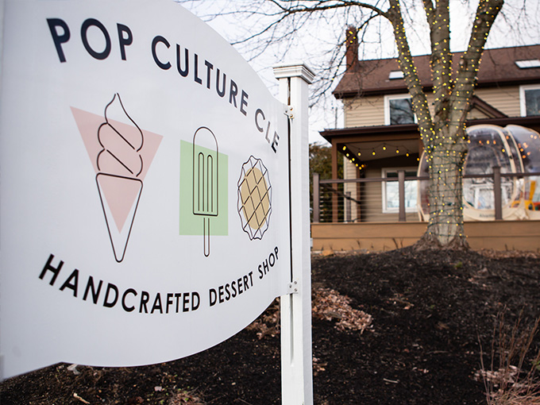
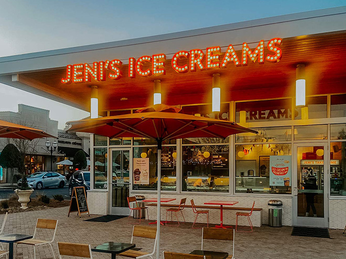
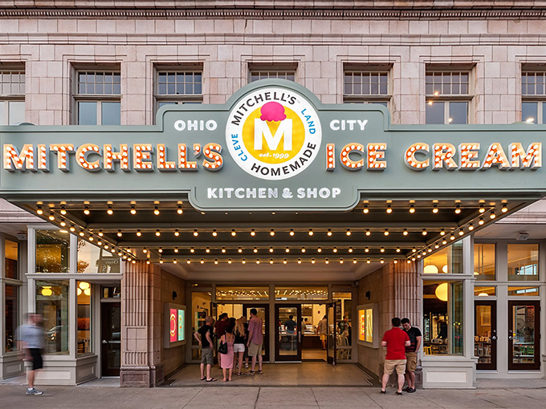

East Coast Custard
Super rich, smooth frozen custard served up with classic stand vibes. It lands at the bottom of the list simply because the flavor menu stays pretty small.
These are my top picks based on taste, variety, value, and the overall experience.
Get the ScoopSix local favorites, six different ways to satisfy an ice cream craving. Here's how they stack up, from good scoops to my absolute favorite.

Super rich, smooth frozen custard served up with classic stand vibes. It lands at the bottom of the list simply because the flavor menu stays pretty small.

An Ohio favorite famous for those massive, solid chocolate chips. It takes fifth spot for offering a big lineup of flavors along with solid gluten-free and dairy-free options.

A beloved local staple that sets itself apart by sweetening its ice cream base with real honey instead of refined sugar. That natural honey flavor gives classic scoops like vanilla a uniquely delicious twist.

Super fun gourmet popsicles and ice cream shaped into adorable designs with tons of flavors and custom toppings. It’s a blast to eat, though it loses a couple of spots because it gets pricey fast.

High-end artisan ice cream packed with intense, incredible flavors. It sits just shy of top spot because its high price tag makes it more of an occasional splurge.

The undisputed champ
The undisputed king of Cleveland ice cream, handmade right in Ohio City. The flavors are consistently perfect, the shop itself is awesome, and nothing else comes close.
Method
I considered flavor and texture first, then looked at variety and price. I also gave points for places that offer something special, whether that's creative flavors, local character, or a memorable signature treat.
I didn't rank these shops by popularity or hype alone. Just because a place is famous doesn't automatically make it the best.
This is ultimately my personal ranking, and I know not everyone will agree. I also can't try every flavor at every location, so there's always a chance that another scoop could change my mind.